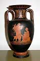
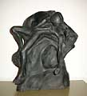

An Introduction to Danish Ceramics and Potters
IV
P. Ipsens Enke, Copenhagen (1843-1955)

The factory was established in 1843 by potter Rasmus Peter Ipsen
(1815-60) from Bornholm.
When he was 13 years old, Peter Ipsen was sent into
service at a brickyard, where he, in his own words, was carrying
4000 bricks each and every day, which marked him for the rest of
his life. Later he was apprenticed with a joiner where he worked
from 5am to 10pm which was so bad for his constitution that he had
to quit.
A school friend found a job for him as a trainee
at The Royal Copenhagen. He soon became a masterly thrower with
a great sense for the design and colors, and in 1843 (28 years old)
he had his own pottery and married Lovise Christine Ipsen (1822-1905).
Hanging flowerpots in terracotta was the livelihood
of the factory, but also pots, amphorae vases painted in oil colors
and figurines, often inspired by the Danish sculptor Bertel Thorvaldsen
(1770-1844).
Peter established contact with that times Danish artists - among
these many sculptors, and he succeeded so much that he in 1847 could
afford to build a new factory in Utterslev outside Copenhagen.


Peter Ipsen died in an early life, only 45 years
old (1860), his widow Lovise Ipsen continued his work, which was
rather unusual in these days, but she had a good knowledge of the
factory, as she had always been a regular visitor there. The oldest
son Bertel Ipsen (1846-1917) who was also a potter, took over management
in 1865.


Bertel Ipsen continued in his father's footsteps,
with the "Thorvaldsen Style", and he was represented at
most world exhibitions. He opened shops in Paris and London. In
1872 Ipsens Enke (enke means widow) make their first glaze. In the
early days, it can be difficult to distinguish Ipsen's terracotta
from L. Hjorth's terracotta, if the items were unsigned. Often they
used the same motives and models, and even though the 2 factories
were competitors, they often cooperated and Hjorth now and then
helped Ipsen with the production. Some of Hjorts potters also, from
time to time, worked at Ipsen's.

The style changed in the 1890's, and they moved towards
production of black fired terracotta. But with Thorvald Bindesbøll
(architect and sculptor, 1846-1908), Georg Jensen (sculptor and
silversmith, 1866-1935) and Christian Joachim (painter and potter,
1870-1943), the Jugendstyle (Art Nouveau) had it's entry.
Thorvald
Bindesbøll, who was one of the pioneers within Danish ceramics,
was a very eccentric artist. His nickname was "Boelle"
(danish for "Rough"). Either you loved him or you hated
him. But Bertel Ipsen regarded him as exciting and had a good cooperation
with him.
Georg Jensen made a few things for Ipsen, before
he established his world famous silversmithy in 1904.
Christian
Joachim was known for his vases with fungus motives. Even though
he lost his right arm as a child, he studied to be a painter and
was a skilled artist. He later became artistic leader of the Aluminia
Faience factory, art director on The Royal Copenhagen.
In 1920-40 following new glazes were developed:
- "Chameleon glaze" (shining in various colors added
gold, platinum or silver)
- "Jade glaze" (dull green)
- "Danit glaze" (Red-lilac or blue-green in a big crackled
network)
- "Metal glaze" (mainly in green colors)
- "Bronze glaze"
- "Ivory glaze"
- "Oxblood glaze", etc.
Georg Thylstrup (silversmith and potter, 1884-1930
sculptor)
produced a number of fishwife's mermaids and fabulous monsters.
Kai Nielsen (painter and sculptor, 1882-1924) is mostly known for
his figurine "Venus Kalipygos". The name is taken from
the Greek god of love Aphrodite's nickname "Kalipygos".
These figurines were in great demand.
Ib Just Andersen (sculptor and silversmith, 1884-1943)
produced in 1940 a few fish and mermaids, which are reminiscent
of the figures and vases etc. he later produced in diskometal from
his world famous silversmithy.
Besides from those already mentioned, a number of
international ly known artists have been connected to factory -
among those:
- Lauritz Jensen (1859-1935 sculptor)
- Jens Ferdinand Willumsen (1863-1958 painter)
- Ellen Locher (1883-1956, sculptor)
- Axel Salto (1889-1961, lithographic artist, painter and potter)
- Axel Soerensen (1891-1967 potter)
- Axel Jensen (sculptor)
- Bode Willumsen (1895-1987 sculptor and potter)
- Arno Malinowski (1899-1976 sculptor)
- Charles Boegh (sculptor)
- Adam Thylstrup (sculptor)
- Niels Norvil (sculptor and potter)
- Arne Bang (1901-1983 sculptor and potter)
- Johannes Hedegaard (1925-, sculptor)
From 1852-1935 Ipsen products have won countless numbers
of awards on exhibitions all over the world'. The factories' marks
(Pressmarks) are:
- P.I (1843-50)
- P. Ipsen(1850-70)
- P.Ipsen eneret (1871-1917)
- P.I.E. (with a crown)(1918-55)
- From time to time the signature of the artists themselves occur.
P. Ipsens Enke closed in 1955.
Part 1 > Jens
Michael Andersen
Part 2 > L.Hjorts Terracotta
Factory, Roenne, Bornholm
Part 3 > Soeholm, Roenne on
Bornholm
Part 4 > P. Ipsens Enke, Copenhagen
Part 5 > Kongstrands Pottery,
Esberg
Part 6 > Potteries and Potters
around Horsens
Danish Ceramics VII - The Turn of the Century
Article kindly supplied by Tove Jespersen Klitgaarden
Antique & Ceramics, Denmark. www.Klitgaarden.net
e-mail: Klitgaarden@tdcadsl.dk
More Articles |


{kind=link}
{kind=link}
{kind=link}
{kind=link}
{kind=link}
{kind=link}
{kind=link}
{kind=link}
{kind=link}
{kind=link}
{kind=link}
{kind=link}